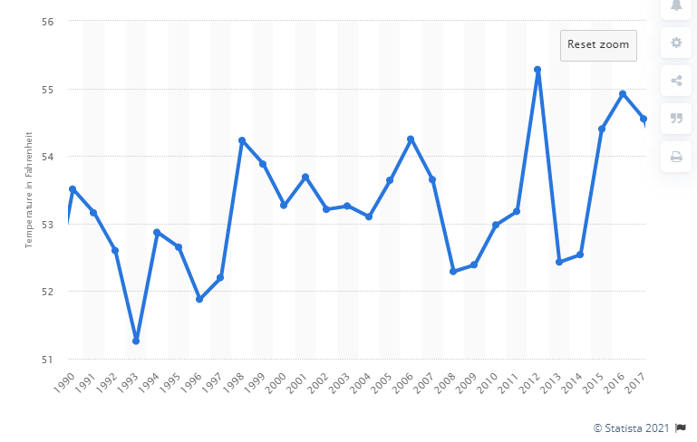

Climate Change in the United States from 1990 to 2017
Graph of US Emissions
This chart shows data regarding CO2 emissions in the United States, currently the third most populated country. In the year 1990, the United States emitted 4,823,403.118 kt(kiloton) of C02. In 2017, the United States emitted approximately 5,140,000 kt.
Graph of US Temperature Change

This chart shows data regarding temperatures in the United States, currently the third most populated country. In the year 1990, the United States had an average of 53.51 degrees Fahrenheit. In 2017, the United States had an average of 54.55 degrees Fahrenheit.